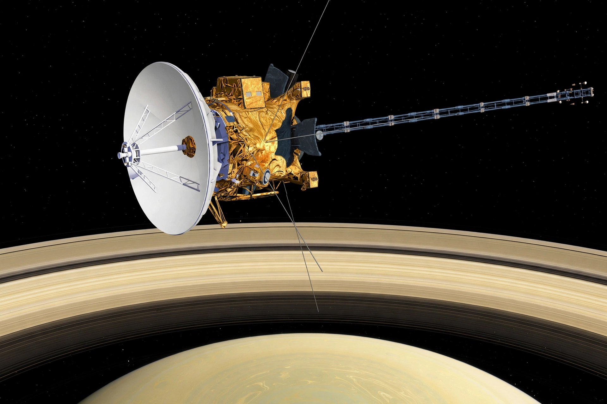

Cassini–Huygens

[Image: Artist's impression of the Cassini spacecraft, with its large high-gain dish, orbiting Saturn above the rings]
Cassini–Huygens, commonly called Cassini, was a space-research mission by NASA, the European Space Agency and the Italian Space Agency to study the planet Saturn and its system of rings and moons. Launched in 1997, the Cassini orbiter arrived at Saturn in 2004, and its European Huygens lander touched down on the moon Titan in January 2005.
Mission
Cassini performed 162 targeted flybys of Saturn's moons, discovered new moons and studied Enceladus, whose icy jets feed a subsurface ocean and Saturn's E ring. Huygens' descent to Titan's surface remains the most distant landing ever made. Cassini found lakes and seas of liquid methane on Titan and evidence of hydrothermal activity on Enceladus.
Grand Finale
With fuel running low, the spacecraft was disposed of by plunging into Saturn's atmosphere on 15 September 2017 — the mission's “Grand Finale” — after a series of daring orbits passing between the planet and its rings, so as to protect potentially habitable moons from contamination.